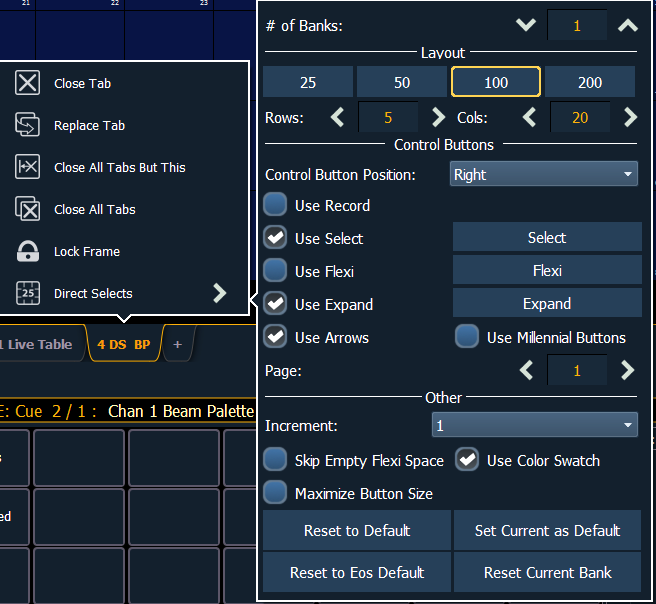
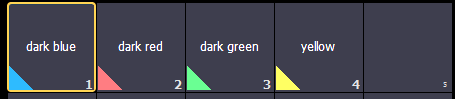

Direct Selects Configuration Menu
You have considerable flexibility in how you organize the direct selects by using the options in the configuration menu.
To access the configuration menu, right click or tap on the direct select's tab to see the configuration menu.

The following options are available:
- # of Banks - sets the number of direct select banks that will display.
Layout
- 25, 50, 100, 200 - allows you to select the number of buttons that will display per bank.
- Rows - allows you to select the number of rows in the banks.
- Columns - allows you to select the number of columns in the banks.
Control Buttons
- Control Button Position - allows you to set if the control buttons will display on the left side or the right side of the banks.
- Use Record - displays the {Record} button. The {Record} button posts Record to the command line.
- Use Select - displays the {Select} button. The {Select} button will display the selected direct select type. Pressing it will allow you to select a different direct select type.
- Use Flexi - displays the {Flexi} button. See Direct Selects in Flexi Mode
- Use Expand - displays the {Expand} button.
- Use Arrows - displays the page up and down arrows.
- Use Millennial Buttons - displays the century and millennial buttons. These buttons allow you to jump to pages in the hundreds and thousands.
- {Page} - displays the selected page of direct selects.
Other
- Increment - allows you to select if the direct select buttons will display as 1 (whole numbers), .1 (tens), .01 (hundreds).
- Skip Empty Flexi Space - will display a vertical bar instead of empty space between a range of buttons when in Flexi mode.
- Use Color Swatch - displays a triangular color swatch in the lower left corner of a color palette direct select.

- Maximize Button Size - sets the size of the direct select buttons to fill the available space. This is similar to Fit to Screen in previous versions of software.
- Reset to Default - will restore the settings to the default state. If no default state has been set, the Eos default settings will be used.
- Set Current as Default - allows you to set the current settings to be used as a default state.
- Reset to Eos Default - restores the settings to Eos defaults.
- {Reset Currant Bank} - restores the settings of the current bank.